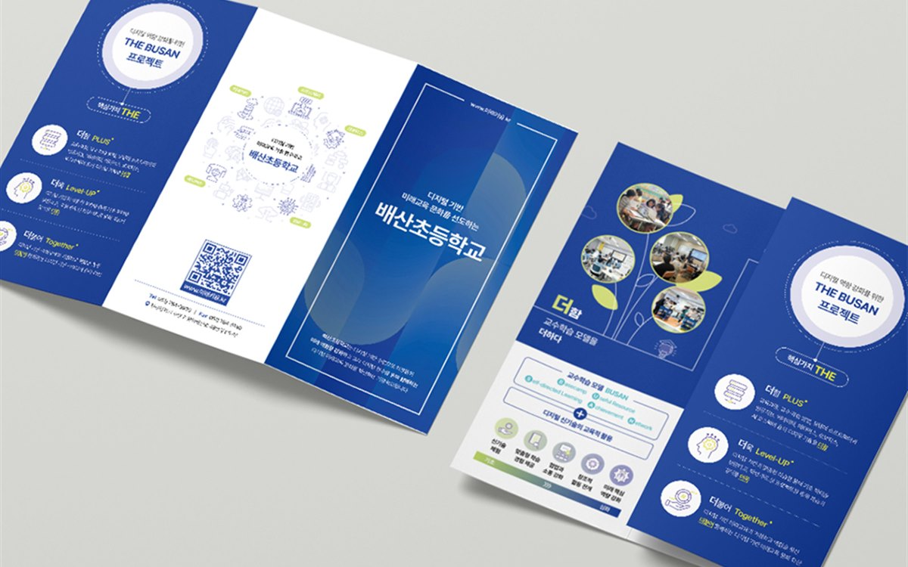

핵심 요약
① 전단지 인쇄비는 A4·A5 같은 규격 판형을 쓰고 변형 판형을 피하는 것만으로 종이 손실을 줄여 단가가 내려갑니다.
② 4도 컬러 대신 2도 인쇄나 단면 컬러·뒷면 흑백 구성으로 바꾸면 같은 수량에서 인쇄비가 줄어듭니다.
③ 신학기 직전 2~3주는 인쇄소가 몰리는 시기라, 원고를 한 달 전에 확정하고 옵셋 인쇄로 발주하면 부당 단가와 납기를 모두 잡을 수 있습니다.
안녕하세요, 퍼스트디자인 대전지사입니다. 둔산동과 노은동 학원가는 신학기와 여름·겨울 특강 시즌마다 전단지와 수강 안내 브로슈어를 대량으로 찍습니다. 매번 견적을 받으면 업체마다 금액이 달라 무엇이 기준인지 헷갈린다는 원장님이 많습니다. 인쇄 단가는 수량보다 판형·도수·용지·일정 네 가지에서 갈립니다. 오늘은 이 네 가지를 조절해 품질은 유지하면서 단가를 낮추는 방법을 정리해 드리겠습니다.
판형을 규격에 맞추면 얼마나 달라질까?
인쇄는 큰 전지에 여러 장을 앉혀 찍은 뒤 잘라내는 방식입니다. A4(210×297mm)나 A5(148×210mm)처럼 규격 판형은 전지에 낭비 없이 앉혀지지만, 200×280mm 같은 변형 판형은 자투리가 생겨 그만큼 종이비가 올라갑니다. 디자인이 조금 특별해 보이게 하려고 변형 판형을 고르면 인쇄비가 10~20% 늘어나는 셈입니다.
저희는 전단지는 A4 또는 A5, 브로슈어는 A4 2단·3단 접지 규격을 기본으로 잡습니다. 판형은 규격을 지키고 디자인은 여백과 사진 배치로 차별화하는 편이 단가 면에서 훨씬 유리합니다.

색상 수를 줄이면 품질이 떨어지지 않을까?
인쇄 도수는 사용하는 잉크 색 수입니다. 양면 4도 컬러(양면 모두 풀컬러)가 가장 비싸고, 앞면 컬러·뒷면 흑백, 또는 2도 인쇄(로고 색 하나 + 검정)로 갈수록 단가가 내려갑니다. 학원 전단지는 앞면에 사진과 핵심 메시지를 컬러로 넣고, 뒷면 시간표와 수강료 안내는 흑백으로 구성해도 정보 전달에는 문제가 없습니다.
| 구성 | 인쇄비 수준 | 어울리는 용도 |
| 양면 4도 컬러 | 기준(100%) | 수강 안내 브로슈어, 설명회 자료 |
| 앞면 4도 · 뒷면 1도 | 약 70~80% | 신학기 전단지, 특강 안내 |
| 양면 2도 | 약 60~70% | 시간표, 셔틀 안내, 가정통신문 |
2도 인쇄는 로고 색과 검정만으로 구성하기 때문에 오히려 학원 브랜드 색이 또렷하게 기억되는 장점도 있습니다. 수치는 수량과 용지에 따라 달라지므로 견적 시 두 가지 구성으로 비교해 드립니다.
용지는 어떤 기준으로 골라야 할까?
전단지는 아트지 120~150g, 브로슈어는 아트지 또는 스노우지 150~200g이 표준입니다. 두꺼울수록 고급스럽지만 단가와 우편 발송비가 함께 올라갑니다. 아파트 우편함에 넣는 전단지는 120g이면 충분하고, 설명회에서 학부모에게 직접 건네는 브로슈어는 180g 이상으로 손에 잡히는 느낌을 주는 것이 좋습니다. 코팅은 유광보다 무광이 필기와 가독성에 유리해 시간표가 있는 인쇄물에 권합니다.
신학기 인쇄는 언제 발주해야 할까?
2월 말과 8월 말은 대전 전체 인쇄소가 가장 바쁜 시기입니다. 이때 급하게 맡기면 디지털 인쇄로 돌릴 수밖에 없어 부당 단가가 올라가고 납기도 늦어집니다. 원고를 한 달 전에 확정하고 옵셋 인쇄로 발주하면 같은 수량에서 부당 단가가 크게 내려갑니다. 저희는 학원별로 연간 발행 일정을 미리 잡아 두고 성수기 전에 인쇄를 마치는 방식을 권합니다.
또 하나, 전단지·브로슈어·현수막·SNS 이미지를 한 번에 같은 디자인으로 만들면 디자인비가 한 번만 들어가고 학원 이미지도 통일됩니다.
자주 묻는 질문
Q. 둔산동 영어학원인데 전단지 3,000장 견적이 궁금해요.
A. 판형·도수·용지에 따라 달라지므로 A4 양면 4도와 앞면 4도·뒷면 1도 두 가지로 비교 견적을 드립니다. 3,000장은 옵셋 인쇄 구간이라 디지털보다 부당 단가가 유리합니다.
Q. 원고와 사진이 없는데 디자인이 가능한가요?
A. 네. 커리큘럼과 시간표만 주시면 문구 정리와 학원 촬영까지 함께 진행합니다. 노은동·둔산동 학원은 출장 촬영도 가능합니다.
Q. 배포까지 맡길 수 있나요?
A. 인쇄물 제작이 기본이고, 아파트·상가 배포는 지역 배포 업체와 연계해 진행합니다. 배포 지역과 수량을 알려주시면 함께 견적을 안내드립니다.
Q. 인쇄 후 시간표가 바뀌면 어떻게 하나요?
A. 바뀌기 쉬운 정보는 스티커나 별지로 처리하는 방법을 처음부터 설계해 드립니다. 소량이면 디지털 인쇄로 수정본을 빠르게 다시 찍을 수 있습니다.
퍼스트디자인 대전지사
대덕연구단지와 정부대전청사, 세종·청주·공주 충청권의 연구기관·바이오 기업·공공기관·제조기업 홍보물을 전담합니다. 기획·디자인·번역·촬영·인쇄를 한 팀에서 처리하고, 자체 인쇄소에서 소량 디지털 인쇄부터 대량 옵셋 인쇄까지 직접 진행합니다. 초안을 먼저 확인받고 진행하는 방식으로 12년간 3,200건 이상을 납품했습니다.
- 12년+편집 디자인 경력
- 3,200+납품 프로젝트
- 98%재의뢰 · 소개
- 400+정부지원사업 수행
둔산동·노은동·도안동 학원의 신학기 전단지, 수강 안내 브로슈어, 설명회 자료 제작이 필요하시면 수량과 배포 일정을 알려주세요. 판형·도수·용지별 비교 견적을 당일 안내드립니다. 상담은 1600-9487(평일 09:00~18:00) 또는 work@firstmkt.co.kr로 문의해 주세요. 대전·세종·충청권은 직접 방문 미팅도 가능합니다.